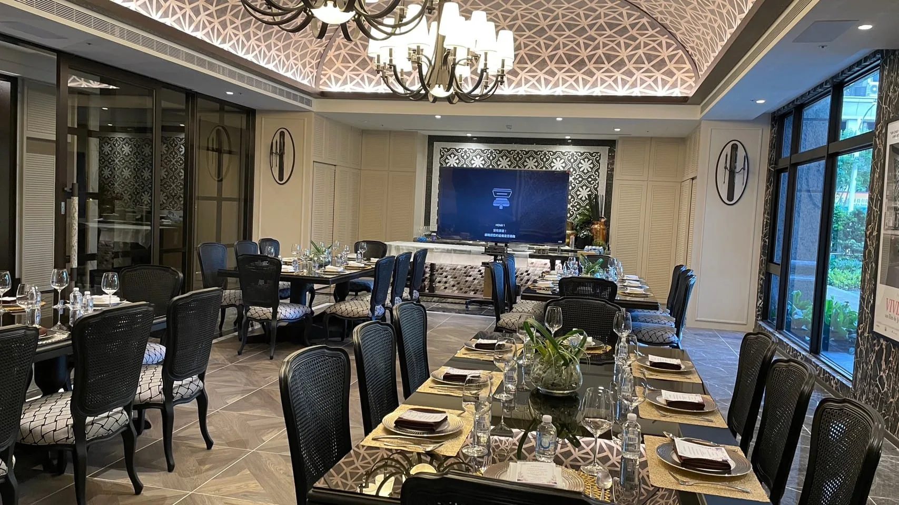

不少人以為私廚只適合小型晚餐，其實從2人的浪漫晚餐到30人以上的企業接待，都在私廚服務的範圍內，差別在於菜單複雜度與人力配置會隨人數調整。
小型聚會的重點是每道菜的細膩度，主廚可以花更多心思在擺盤與個人化調整上，適合求婚晚餐、紀念日這類重視氛圍的場合。
這個規模開始需要考慮上菜節奏，避免太多道菜造成等待時間過長，同時菜色種類也要有一定豐富度，兼顧不同賓客的口味偏好。
大型場合需要更多現場人力分工，備料、出餐、擺盤各有專責人員，菜單設計也會偏向能快速出餐、同時維持品質一致的類型。
除了菜單複雜度，人數也會影響需要的餐具數量、場地空間需求，以及是否需要額外的服務人力，這些都會反映在報價當中。
舒苑依人數規模設計了不同的菜單方案，從2-8人到30人以上都有對應規劃，可以參考菜單方案頁面了解詳細內容。
如果你不確定自己的人數規模適合哪種方案，歡迎直接聯繫舒苑團隊，會有專人依實際人數提供建議。
提供活動日期、人數與場地，我們將提供最適合的私廚方案與報價建議。